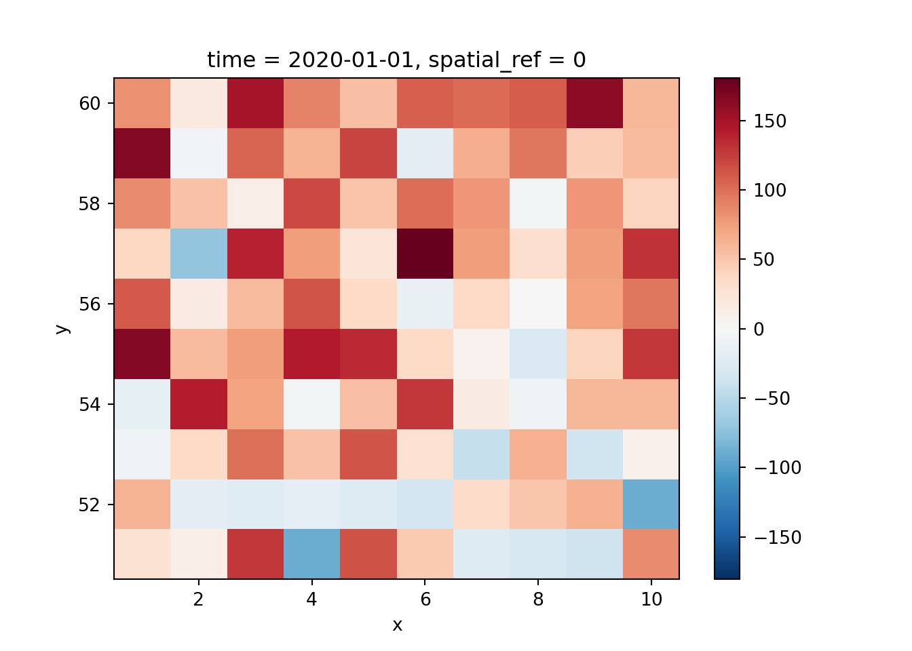

OpenGeoHub summer school tutorial Tue 2024-09-02, 13:30-15:00
Authors: Edzer Pebesma, GitHub Copilot
What is an array?
An array is a data structure that can hold multiple values in more than two dimensions. It is a generalization of matrices to higher dimensions. Arrays can be used to represent multi-dimensional data, such as images, videos, or spatial-temporal datasets.
Arrays extend vectors (1D) to multidimensional structures. In R, this happens by adding the special dim attribute.
we see that the matrix is filled column-wise by default (“column-major order”). We can change that by specifying the byrow argument in the matrix() function:
We may consider a vector as a 1-dimensional array, and a matrix as a 2-dimensional array. We can extend this to higher dimensions by specifying more dimensions:
In column-major order, the first index changes fastest. To find the element at row 2, column 3 in a 6x4 matrix, we can calculate its position in the vector as follows:
The difference in the code may be seen as a reason why Python has 0-based indexing, and R is more readable.
finding an element in a 4D array is left as an exercise to the reader.
finding elements in arrays comes at a near-zero cost, as it is just an arithmetic operation.
finding elements in data frames or lists is more complex:
it may require searching through names or keys
row + column cannot be reduced to a single index
Are data.frames also arrays?
No, data.frames are lists of vectors of equal length, but not necesarily of equal type. They do not have a dim attribute, but they do have nrow and ncol attributes. You can convert a data.frame to a matrix (which is a 2D array) if all columns are of the same type.
df =data.frame(a =1:3, b =c("x", "y", "z"), c =Sys.Date() +1:3)df
a b c
1 1 x 2025-09-02
2 2 y 2025-09-03
3 3 z 2025-09-04
as.matrix(df) # converts to character matrix
a b c
[1,] "1" "x" "2025-09-02"
[2,] "2" "y" "2025-09-03"
[3,] "3" "z" "2025-09-04"
df2 =data.frame(a =1:3, b =4:6, c =c(TRUE, FALSE, NA))as.matrix(df2) # converts to numeric matrix
a b c
[1,] 1 4 1
[2,] 2 5 0
[3,] 3 6 NA
Array operations
Arrays support element-wise operations, such as addition, subtraction, multiplication, and division. These operations are performed on corresponding elements of the arrays.
a1[0,0,:] # first row, first column across all slices
array([1, 2, 3, 4])
a1[1,2,:] # second row, third column across all slices
array([21, 22, 23, 24])
a1[0,:,0] # first row across first slice
array([1, 5, 9])
a1[1,:,3] # second row across fourth slice
array([16, 20, 24])
a1[:,0,0] # first column across first slice
array([ 1, 13])
a1[:,2,3] # third column across fourth slice
array([12, 24])
Linear algebra on arrays
With vectors and matrices we can do all linear algebra operations: matrix-vector multiplication, matrix-matrix multiplication, determinants, inverses, eigenvalues, singular value decomposition, etc. These operations form the basis for all statistical, ML and DL methods. This however is not the topic of this tutorial.
Raster and vector data cubes
Arrays are data cubes. Raster and vector data cubes are arrays with one or more spatial dimensions, and zero or more temporal dimensions. Raster data cubes can be sliced into a raster map, spatial dimensions are e.g. longitude and latitude, or x- and y-dimensions in some projected coordinate reference system. Vector data cubes can be sliced into a set of spatial features, having point, line or polygon geometries.
Linking to GEOS 3.12.2, GDAL 3.11.3, PROJ 9.4.1; sf_use_s2() is TRUE
# create a 3D array with dimensions (x, y, time)data =array(1:(10*10*5) +rnorm(500)*50, dim =c(x =10, y =10, time =5))# create a stars objectraster_cube =st_as_stars(list(a = data))raster_cube
stars object with 3 dimensions and 1 attribute
attribute(s):
Min. 1st Qu. Median Mean 3rd Qu. Max.
a -90.81925 131.8367 248.8503 249.5617 376.1115 624.5515
dimension(s):
from to
x 1 10
y 1 10
time 1 5
stars object with 3 dimensions and 1 attribute
attribute(s):
Min. 1st Qu. Median Mean 3rd Qu. Max.
a -90.81925 131.8367 248.8503 249.5617 376.1115 624.5515
dimension(s):
from to offset delta refsys x/y
x 1 10 1 1 WGS 84 (CRS84) [x]
y 1 10 51 1 WGS 84 (CRS84) [y]
time 1 5 2020-01-01 1 days Date
# plot the first time sliceplot(raster_cube, box_col ='orange')
import numpy as npimport xarray as xr# create a 3D array with dimensions (x, y, time)data = np.arange(1, 5*10*10+1).reshape((5, 10, 10)) + np.random.normal(0, 50, size=(5, 10, 10))# create an xarray DataArrayraster_cube = xr.DataArray(data, dims=("time", "y", "x"), coords={"time": np.arange(np.datetime64('2020-01-01'), np.datetime64('2020-01-06')),"y": np.arange(51, 61),"x": np.arange( 1, 11)})
<string>:2: UserWarning: Converting non-nanosecond precision datetime values to nanosecond precision. This behavior can eventually be relaxed in xarray, as it is an artifact from pandas which is now beginning to support non-nanosecond precision values. This warning is caused by passing non-nanosecond np.datetime64 or np.timedelta64 values to the DataArray or Variable constructor; it can be silenced by converting the values to nanosecond precision ahead of time.
# set the coordinate reference system (CRS) using rioxarrayimport rioxarrayraster_cube = raster_cube.rio.write_crs(4326)print(raster_cube.rio.crs)
# plot the first time sliceraster_cube.isel(time=0).plot()

Raster data cubes are multi-dimensional arrays that represent spatial-temporal data. They can be used to store and analyze data such as satellite imagery, climate data, or any other data that varies over space and time.
stars object with 3 dimensions and 1 attribute
attribute(s):
Min. 1st Qu. Median Mean 3rd Qu. Max.
L7_ETMs.tif 1 54 69 68.91242 86 255
dimension(s):
from to offset delta refsys point x/y
x 1 349 288776 28.5 SIRGAS 2000 / UTM zone 25S FALSE [x]
y 1 352 9120761 -28.5 SIRGAS 2000 / UTM zone 25S FALSE [y]
band 1 6 NA NA NA NA
import xarray as xrimport rioxarray as rxrr = rxr.open_rasterio('https://github.com/r-spatial/stars/raw/refs/heads/main/inst/tif/L7_ETMs.tif')print(r)
Vector data cubes are data cubes for which one or more dimensions are associated with a set of feature geometries (POINT, LINESTRING, POLYGON or their MULTI- variants). They can be used to store and analyze time series associated with POINT or POLYGON geometries.
stars object with 2 dimensions and 1 attribute
attribute(s):
Min. 1st Qu. Median Mean 3rd Qu. Max. NA's
tos [K] 271.3261 276.8961 287.0154 287.8503 301.0382 304.3468 96
dimension(s):
from to offset delta refsys point
geometry 1 20 NA NA NA TRUE
time 1 24 2001-01-16 30 days PCICt_360 NA
values
geometry POINT (303.6857 -39.25173),...,POINT (177.5215 -75.11236)
time NULL
library(xts)
Loading required package: zoo
Attaching package: 'zoo'
The following objects are masked from 'package:base':
as.Date, as.Date.numeric
plot(as.xts(as.POSIXct(e)))
Warning in as.POSIXct.PCICt(e[[i]]): 360-day PCICt objects can't be properly
represented by a POSIXct object
import geopandas as gpdimport xarray as xrimport rioxarray as rxrfrom shapely.geometry import Pointimport numpy as np# open https://github.com/r-spatial/stars/blob/main/inst/nc/tos_O1_2001-2002.nc with xarray#r = xr.open_dataarray("https://github.com/r-spatial/stars/blob/main/inst/nc/tos_O1_2001-2002.nc?raw=true")ds = xr.open_dataset("/home/edzer/R/x86_64-pc-linux-gnu-library/4.4/stars/nc/tos_O1_2001-2002.nc")# create random points within the bounding box of the rasterr = ds['tos']r
<xarray.DataArray 'tos' (time: 24, lat: 170, lon: 180)> Size: 3MB
[734400 values with dtype=float32]
Coordinates:
* lon (lon) float64 1kB 1.0 3.0 5.0 7.0 9.0 ... 353.0 355.0 357.0 359.0
* lat (lat) float64 1kB -79.5 -78.5 -77.5 -76.5 ... 86.5 87.5 88.5 89.5
* time (time) object 192B 2001-01-16 00:00:00 ... 2002-12-16 00:00:00
Attributes:
standard_name: sea_surface_temperature
long_name: Sea Surface Temperature
units: K
cell_methods: time: mean (interval: 30 minutes)
original_name: sosstsst
original_units: degC
history: At 16:37:23 on 01/11/2005: CMOR altered the data in t...
At 16:37:23 on 01/11/2005: CMOR altered the data in the following ways: added 2.73150E+02 to yield output units; Cyclical dimension was output starting at a different lon;
bbox = r.rio.bounds()points = [Point(np.random.uniform(bbox[0], bbox[2]), np.random.uniform(bbox[1], bbox[3])) for _ inrange(20)]gdf = gpd.GeoDataFrame(geometry=points, crs="EPSG:4326")# read the netCDF file as an xarray DataArray# extract the time series at the pointse = r.sel(lon=xr.DataArray(gdf.geometry.x, dims="points"), lat=xr.DataArray(gdf.geometry.y, dims="points"), method="nearest")e
<xarray.DataArray 'tos' (time: 24, points: 20)> Size: 2kB
[480 values with dtype=float32]
Coordinates:
lon (points) float64 160B 7.0 335.0 91.0 119.0 ... 133.0 99.0 93.0
lat (points) float64 160B -69.5 -22.5 -10.5 -7.5 ... 79.5 -29.5 84.5
* time (time) object 192B 2001-01-16 00:00:00 ... 2002-12-16 00:00:00
* points (points) int64 160B 0 1 2 3 4 5 6 7 8 ... 12 13 14 15 16 17 18 19
Attributes:
standard_name: sea_surface_temperature
long_name: Sea Surface Temperature
units: K
cell_methods: time: mean (interval: 30 minutes)
original_name: sosstsst
original_units: degC
history: At 16:37:23 on 01/11/2005: CMOR altered the data in t...
At 16:37:23 on 01/11/2005: CMOR altered the data in the following ways: added 2.73150E+02 to yield output units; Cyclical dimension was output starting at a different lon;
print(e)
<xarray.DataArray 'tos' (time: 24, points: 20)> Size: 2kB
[480 values with dtype=float32]
Coordinates:
lon (points) float64 160B 7.0 335.0 91.0 119.0 ... 133.0 99.0 93.0
lat (points) float64 160B -69.5 -22.5 -10.5 -7.5 ... 79.5 -29.5 84.5
* time (time) object 192B 2001-01-16 00:00:00 ... 2002-12-16 00:00:00
* points (points) int64 160B 0 1 2 3 4 5 6 7 8 ... 12 13 14 15 16 17 18 19
Attributes:
standard_name: sea_surface_temperature
long_name: Sea Surface Temperature
units: K
cell_methods: time: mean (interval: 30 minutes)
original_name: sosstsst
original_units: degC
history: At 16:37:23 on 01/11/2005: CMOR altered the data in t...